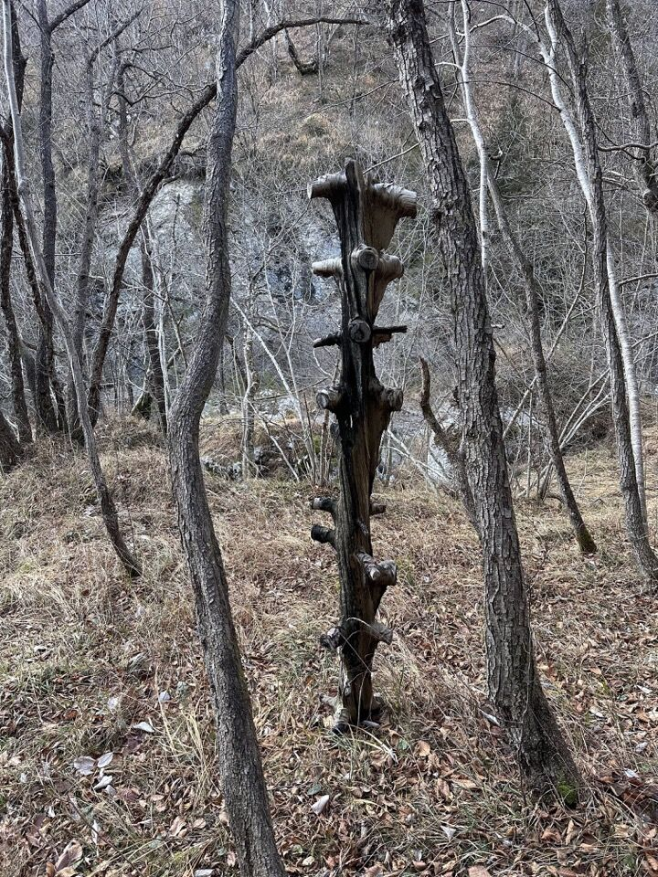

Lunghissimo ed affascinante anello nel versante Sud del Resettùm: solo la conoscenza pregressa della traccia del Landravon de Varma e lo studio accurato delle mappe e delle foto da lontano ci ha permesso di percorrere in tranquillità il traverso fra il Col Musiel e il Landravon de Varma (stando troppo bassi o troppo alti si rischia di incontrare rii difficilmente superabili).
Giro improponibile da fare a metà dicembre.
Iniziamo dal bel sentiero del Varma; già qui l'ambiente è molto bello.
Ahimé m'incrodo ma ne vengo fuori egregiamente.
Il canale di San Daniele...
...e il canale delle Brente. Desidero moltissimo percorrere entrambi.
La mèta è ancora molto lontana.
La bella costa su cui sale la traccia nera indicata sulla Tabacco, dal greto del canale di San Daniele.
La dorsale è davvero bella e panoramica.
Il tratto che si vede in centro foto risulterà quello più ripido.
La forcella del Vuom di Bettigia (fra val Ruassa e val Bettigia) con i due risalti che la dividono dal Cuvîl.
L'austero versante Est del Cuvîl, che già tutti noi abbiamo salito.
La Costa Landrone con dietro la forcella fra val Ruassa e val Bettigia.
La zona del Landravon con indicato il punto "convenzionale" dove si trovano alcune grotte. Dopo l'escursione, vedendo le foto sospetto che con Landravon de Varma non si intenda solo quello che abbiamo visto noi, ma anche quegli antri poco più alti alla destra della freccia (che sembrano molto grandi), e quelli sopra l'enorme buco in basso (che non è propriamente un antro, il sentiero ci passa in parte).

C'avviciniamo alla mèta.
Intanto osserviamo bene il bosco che traverseremo in falsopiano.
Verso i selvaggi monti di Andreis.

Ormai è fatta.
Scruto con un po' d'apprensione il proseguo dell'itinerario.
Scendiamo con attenzione alla forcella a Nord del Col Musiel.
Il risalto successivo obbliga ad un passaggio impegnativo su placca (santo mugo... anche se secco!).
Il Col Musiel si allontana.
La traversata fra il Col Musiel e il Landravon de Varma non va sottovalutata (solo qualche traccia di animali ad intermittenza, come è normale nei boschi di faggio).
Un ultimo sguardo al Col Musiel, dalla costa Landrone.
Uno sguardo ravvicinato al Vuom di Bettigia; mi viene da dire che oltre all'uomo c'è pure la donna!
Arriviamo finalmente al Landravon de Varma, inconsci (chi più chi meno) che la strada è ancora lunghissima.
Curioso totem che avevo già notato la volta scorsa, lungo il sentiero per il Landravon.
Il buio ci sorprende (si fa per dire) lungo il traverso sopra il canale delle Brente...
...non troppo piacevole devo dire.